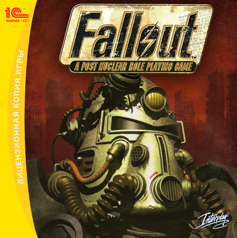

Наша почта:
falloutfans@yandex.ru
Сюжет
Действие игры происходит в далёком ретрофутуристическом будущем (будущем по представлению американцев поколения 50-х годов XX века)[17][19]. Местом действия выступают пустоши (англ. Wastelands), возникшие на месте западной части США. Война между США и Китаем за последние нефтяные источники закончилась взаимным массированным ядерным ударом 23 октября 2077 года[20]. Из-за войны мир подвергся не только радиоактивному заражению, но также произошла утечка секретного экспериментального биологического оружия — вируса ВРЭ (вирус рукотворной эволюции), который даже спустя много лет после войны присутствует в атмосфере, хотя и в очень незначительной концентрации. Бо́льшая часть населения Земли вымерла. Некоторым американцам удалось спастись в убежищах (англ. Vault)[21], каждое из которых вмещало по 1000 человек. Следить за порядком в убежищах должны были Смотрители (англ. Overseer). Помимо здоровых людей мир игры населён людьми-мутантами[22], среди которых выделяются гули (англ. ghouls) и супермутанты. Гули, к которым, в частности, относятся выходцы из Убежища 12, внешне похожи на мертвецов или зомби. Разработчики игры предлагали несколько версий того, что превращает человека в гуля. Тим Кейн считал радиацию главной причиной такой метаморфозы, а Крис Тейлор и Крис Авеллон полагали, что на превращение влияет вирус рукотворной эволюции. Однако окончательного мнения по этому поводу выработано не было[23]. Супермутанты — существа огромного роста и физической силы, но зачастую с низким интеллектом. Как гули, так и супермутанты хорошо переносят радиацию и являются долгожителями. Оба вида мутантов живут гораздо дольше людей, но стерильны[23]. Кроме того, мутантами являются почти все животные, среди которых особенно известны двухголовые коровы — брамины. Ими запрягаются транспортные повозки караванов, их используют в сельском хозяйстве и режут на мясо[4]. Разработчики игры постарались передать атмосферу разрушения, анархии и гибели, возникшую после ядерной войны. В упадок пришла техника, во многих городах власть захватили преступные группировки, многие люди одичали и вернулись к племенному устройству общества[4]. Одной из особенностей Fallout является использование крышек от бутылок в качестве денег[24]. Действие игры начинается в 2161 году и охватывает Южную Калифорнию[17]. О судьбе остального мира почти ничего не известно. Игра начинается в Убежище 13, бункере, официально предназначенном для защиты людей во время ядерной войны. К востоку от Убежища 13 находятся деревня Шейди-Сэндс и Убежище 15. На территории Пустошей расположены город Джанктаун, управляемый мэром Киллианом; торговый город Хаб, поселение Могильник, возникшее на месте Лос-Анджелеса, и Некрополь — поселение, населённое гулями — выходцами из Убежища 12. К юго-западу от Убежища 13 расположен бункер Братства Стали, к югу от Могильника находится Собор, занятый последователями религии «Детей Собора». Разрушенная после массивной точечной бомбардировки ядерными боеголовками военная лаборатория, занимавшаяся вооружением и генетическими исследованиями, расположена на юго-востоке карты — называется данная локация Свечением. В северо-западном углу карты находится Военная база «Марипоза», занятая супермутантами. Именно там проводились ранние опыты с вирусом ВРЭ (Вирус Рукотворной Эволюции, F.E.V., в других локализациях упоминается название «Форсированный Эволюционный Вирус», ФЭВ).